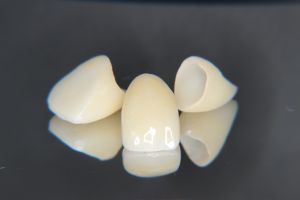
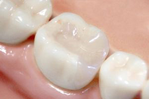
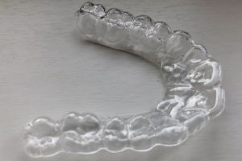
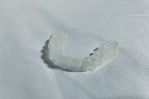
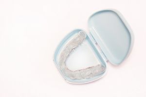
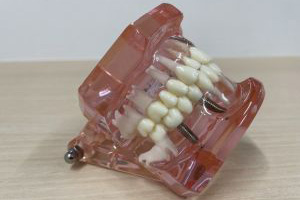
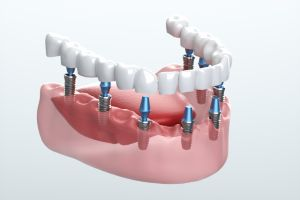
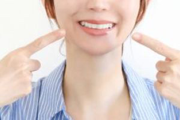
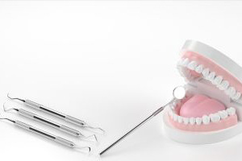
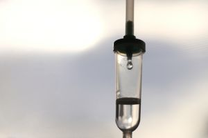

診療一覧
■セラミック治療■
 セラミックはホワイトニングとしても人気
セラミック治療とは欠けた歯や亀裂のある歯などの詰め物・被せ物に
「美しく・丈夫で・加戸の親和性の高い」セラミックという素材を使用した歯科治療のことです。
一見本物の歯と見間違えてしまうこともあるくらい透明感があり、歯の色を調整しやすいため
前歯などの口を開けたときに目立つ部分の治療におすすめしています。
セラミックは天然歯に近い透明感のある審美性が特徴であり、強度も高く天然の歯と同じ硬さですので
口内での親和性が高く金属アレルギーの方も安心して治療することができます。
■歯科矯正（歯列矯正）■
  透明で目立たない
マウスピース矯正は透明なのでいかにも矯正しています！
というようなこともなく接客や営業のお仕事の方でも安心して始められます。
通院回数が少ない
2か月に1回・診察時間は30分～1時間
基本的にご自身でマウスピースを交換していくだけなので
通院も少なく患者様の負担になりません。
■インプラント■
 自分の歯に近い感覚で噛める
インプラントとは人口の材料や部品を体に入れることの総称です。
体になじみやすい材料で作られた歯根の一部あるいは全部を埋め込み、
それを土台にセラミックなどで作った
人口歯を取り付けたものです。
自分の歯と変わらない感覚で噛めるため食事に制限がかからない。
天然歯と見分けがつかないくらい美しい仕上がりになる。
入れ歯のようにずれたり、もたつきしたりすることがないというメリットがあります。
■ホワイトニング■
 叶えたい・取り戻した白さを歯を削らずに手に入れる
ホワイトニングとは歯の表面に専用の薬剤を塗布し、
エナメル質に入り込んだ黄ばみの色素を
浮き上がらせて分解し、歯本来の白さを明るくする方法です。
より安全で確実な効果を得るために、まずはお口の中の検査をし、虫歯や歯周病などの治療を行い
口腔内を整えてからホワイトニングを行います。
■点滴療法■
点滴療法にはさまざまな効果が期待できます
マルチビタミン点滴療法
歯周病やインプラント周囲炎の予防・改善。抜歯後の治療促進
高濃度ビタミンC点滴療法
歯周病やインプラント周囲炎の予防・改善、インプラント手術の傷の治癒促進
白玉点滴
口腔内の金属アレルギーの改善、難治性の歯周病や口内炎の改善
マイヤーズカクテル点滴
歯周病や口内炎などの症状に効果